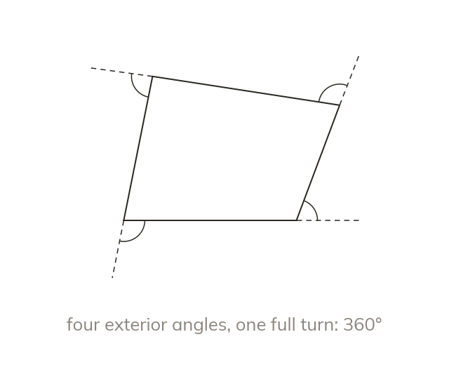

Exterior angles make one full turn
The exterior angles of any polygon sum to 360°. Walking round the shape is one full turn.
Walking once round any polygon turns through one full turn, so its exterior angles always sum to 360°. Each exterior angle sits between one side and the extension of the side before it.